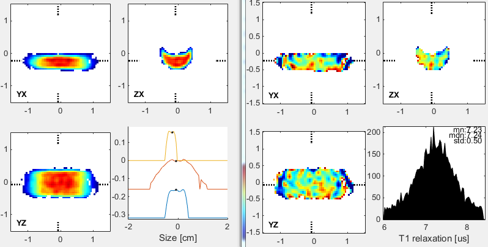

| EPR Imaging Toolbox collection user manual |
Dataset 1 Pulse EPR image of a partially deuterated 1 mM OX063 phantom Acquisition protocol MSPS ESA 36x36 1.5 G/cm  Example: % load projections s = open([' path to sample data ','\prjData1.mat']); % get projection information FBP = s.raw_info.data.FBP; radon_pars.nBins = 64; radon_pars.size = 4; % use only real part of 8th delay projections P = real(s.P(:,8,:)); % remove MSPS scrambling FBP.msps = 'msps'; P = epri_msps_decrypt(P, [], FBP); % resample data to 64 points as required by iradon_d2d_mstage P = imresize(squeeze(P), [radon_pars.nBins,size(s.P, 3)]); % convert serial projection layout into iradon_d2d_mstage layout PP = zeros(size(P,1), size(P,2)); PP(:,s.raw_info.gidx) = P; PP = reshape(PP, [size(P,1), 1, FBP.nAz, FBP.nPolar]); % convert uniform solid angle sampling into uniform linear angle sampling switch upper(FBP.angle_sampling) case {'UNIFORM_SPATIAL','UNIFORM_SPATIAL_FLIP'} Pela=iradon_InterpToUniformAngle(PP,'imgData'); end radon_pars.ELA = FBP; recon_pars.size = 4; % ignored, radon_pars.size is used instead recon_pars.nBins = 64; % ignored, radon_pars.nBins is used instead recon_pars.Filter = 'ram-lak'; recon_pars.FilterCutOff = 0.75; recon_pars.Interpolation = 'spline'; recon_pars.InterpFactor = 4; recon_pars.CodeFlag = 'C'; recon_pars.zeropadding = 2; % any number >= 1 % call the reconstruction program and display result image = iradon_d2d_mstage(Pela, radon_pars, recon_pars); ibGUI(image); Legend: EPR-IT functions; MATLAB functions; comments. |